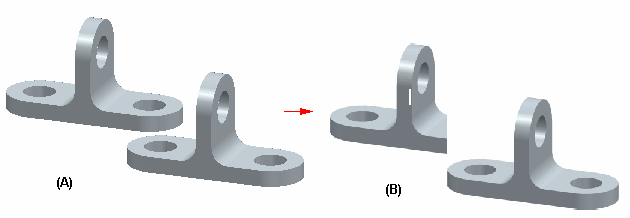
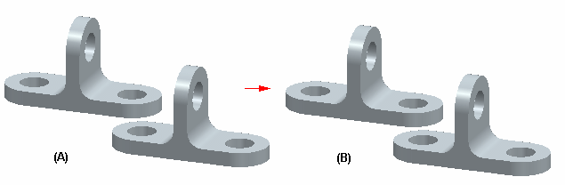

SEV Export Options dialog box (Draft environment)
The SEV Export Options dialog box displays options for draft documents in Solid Edge saved as .sev files.
- Save all colors as black (does not apply to linked/embedded files, images, or shaded views)
-
Saves to the .sev file all colors in the file as black.
Use this option to generate a document with content that prints well in black and white.
- Transparent drawing view backgrounds
-
Controls the display of background of one or more overlapping shaded drawing views. For example, if the option is not set and you save a file containing an overlapping shaded drawing view (A), the background drawing view is hidden by the overlapping drawing view (B) in the saved .sev file.

If the option is set and you save a file containing an overlapping shaded drawing view (A), the background drawing view is not hidden by the overlapping drawing view (B) in the saved .sev file.

Note:A shaded view can overlap a shaded view, any wireframe view, or other objects such as annotations.
- Sheet Options
-
- Active sheet only
-
Saves only the active sheet to the .sev file.
- All sheets
-
Saves all working sheets to the .sev file.
- Sheets: (sheet numbers and ranges)
-
Specifies that a user-defined selection of sheets is saved to the .sev file. Use the adjacent text box to enter:
-
A range of sheets, for example, 1-4.
-
One or more individual sheets, for example, 1,3,5.
-
A combination, for example, 1,3,5-12.
-
- Include 2D Model View
-
Saves the 2D model view to a separate sheet in the .sev file.
Embedded spreadsheets are not supported.